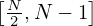
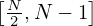
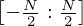
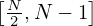

![[− N : − 1]
2](fourier_analysis39x.png) is
equal to Hn with n ∈, respectively. In this scenario, we can associate Hj
with the following frequency:
is
equal to Hn with n ∈, respectively. In this scenario, we can associate Hj
with the following frequency:
We are usually interested in Fourier expansion coefficients in the range n = −N∕2,…,N∕2 (assume that N is even) since we expect the coefficients decay for larger |n| (so we impose a cutoff for a range that is symmetric about n = 0). Then the subscript range of Hn we care about is n ∈. However, the original DFT is for the range n ∈ [0 : N − 1]. How do we reconcile them? The answer is that we make use of the periodic property of DFT. It is obvious that Hn defined in Eq. (34) has the following periodic property:
|
| (37) |
Using this, we can infer what we need: the value of each Hn with n ∈ is
equal to Hn with n ∈, respectively. In this scenario, we can associate Hj
with the following frequency:
|
| (38) |
where f1 = 1∕T.